SF GENYS
Mokykla spaudoje
Mokykla spaudoje
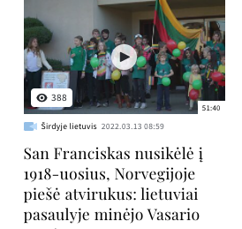
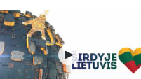
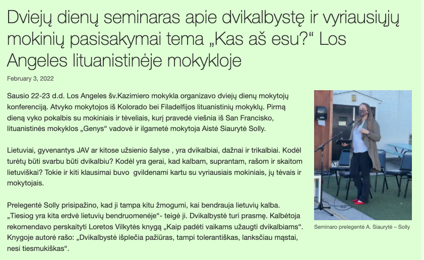
Apie įvykusį dvikalbystės seminarą skaitykite plačiau.
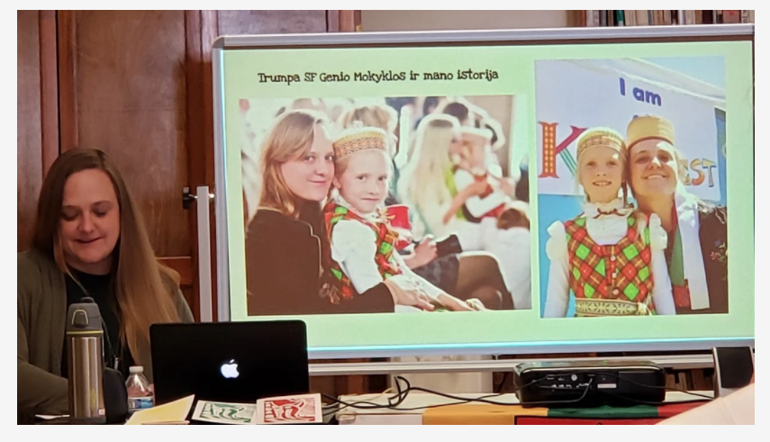
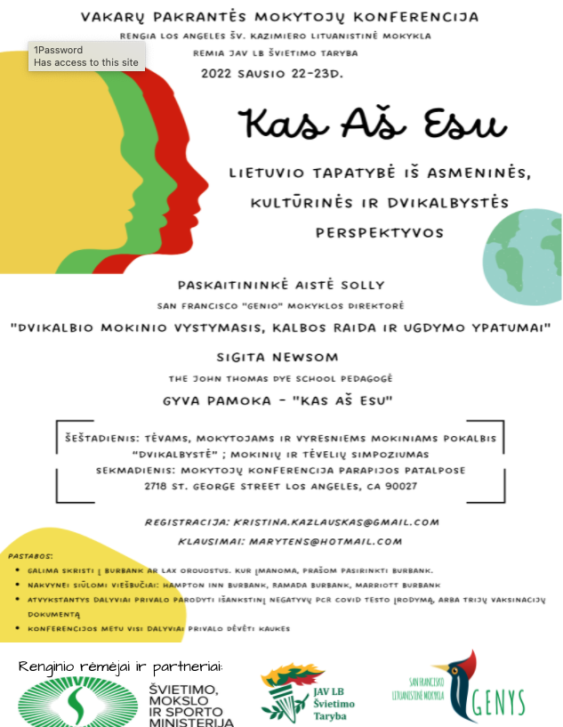
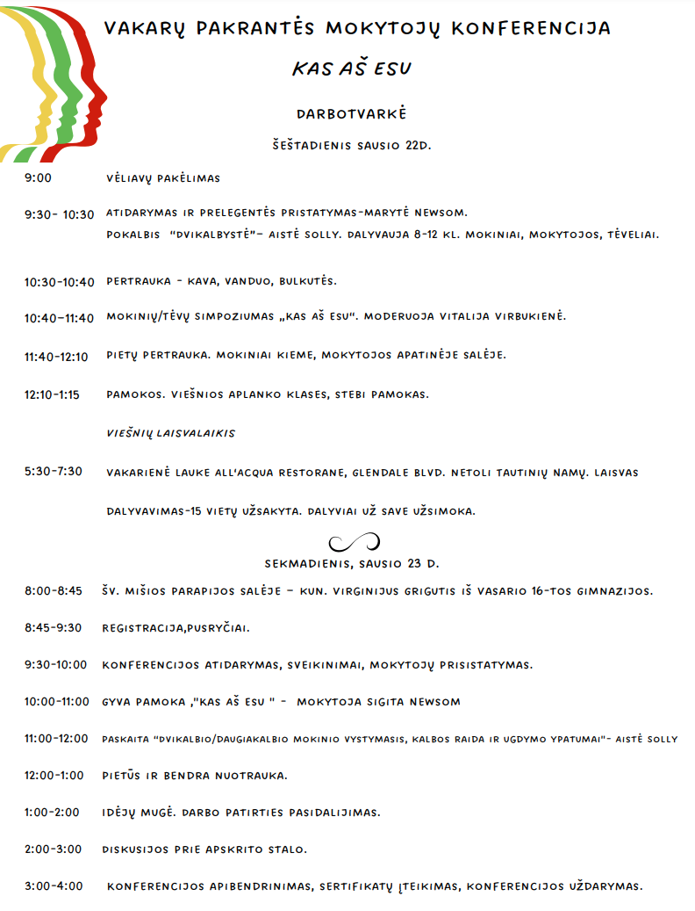
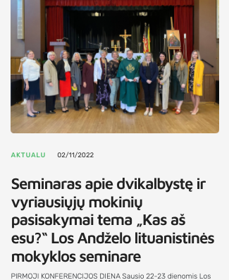
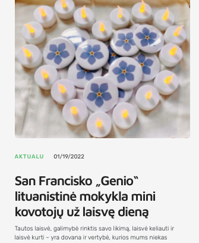
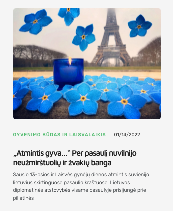
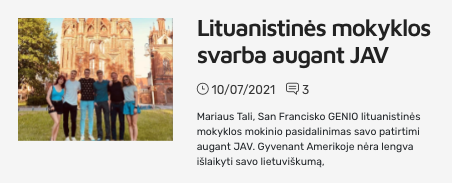
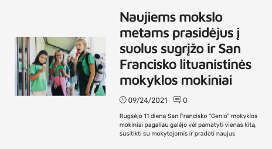
SVEIKINIMAI SU RUGSĖJO 1-ąja! MOKSLO IR ŽINIŲ DIENA!
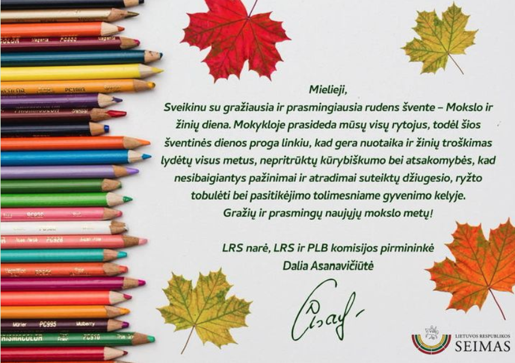
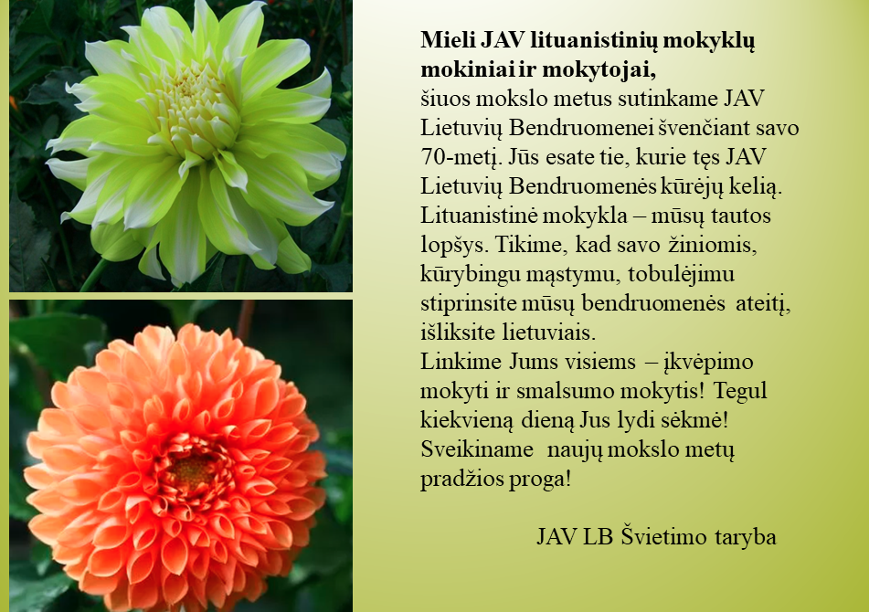
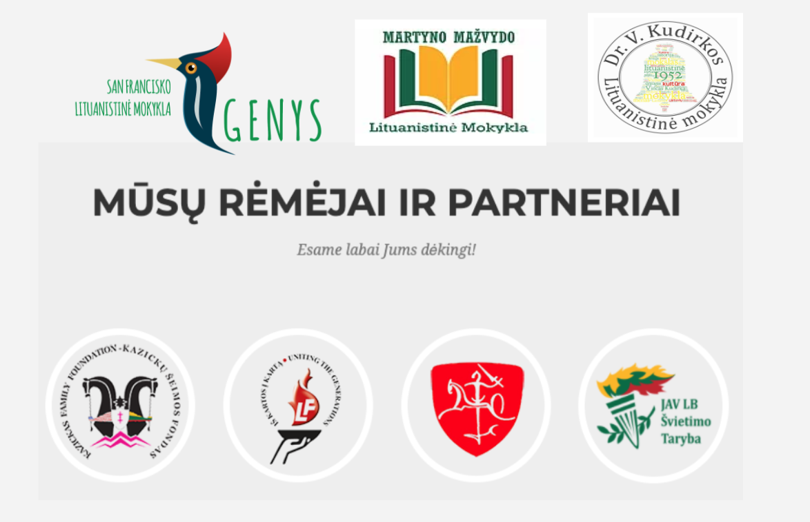
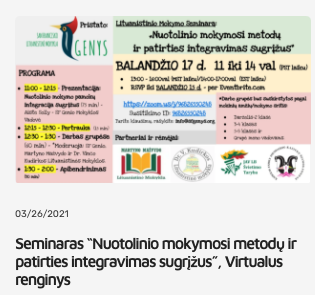
San Francisko lituanistinė mokykla „Genys” surengė virtualų seminarą pedagogams
Norėdami efektyviai mokyti jaunąją kartą, mokytojai turi nuolatos mokytis ir tobulėti patys – tuo įsitikinęs San Francisko lituanistinės mokyklos „Genys“ mokytojų kolektyvas, kurio dėka balandžio 17 dieną buvo surengtas virtualus seminaras „Nuotolinio mokymosi metodų ir patirties integravimas sugrįžus į patalpas”.
Pandemijos laikotarpis, išugdęs virtualių susitikimų įpročius, paskatino naujas partnerystes bei pažintis – virtualus seminaras surengtas bendradarbiaujant kartu su Martyno Mažvydo lituanistine mokykla (Minesota, JAV) ir Dr. Vinco Kudirkos lituanistine mokykla (Naujasis Džersis, JAV). Seminare savo patirtis dėstė ne tik Amerikoje, bet ir Lietuvoje bei Italijoje gyvenantys pedagogai.
Seminaro metu dalyviai dalinosi praktiniais patarimais bei medžiaga, naudinga mokant vaikus tiek distanciniu būdu, tiek grįžus į patalpas. Didelis dėmesys buvo skirtas meniniam ugdymui ir muzikos integravimui į lituanistinį švietimą bei naujų mokymo metodų apžvalgai. Seminaro pabaigoje buvo surengta idėjų mugė, kurios metu aptartos skirtingų amžiaus grupių vaikų ugdymo ypatybės.
Smagu tai, jog net ir esama pandemijos padėtis suteikė progą stiprinti lituanistinių kolegų bendruomenę visame pasaulyje. Seminaro globėjai - JAV Švietimo Taryba, Lietuvių Fondas ir Kazickų Šeimos Fondas.
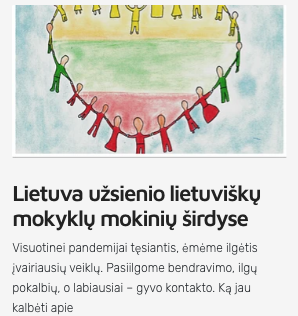
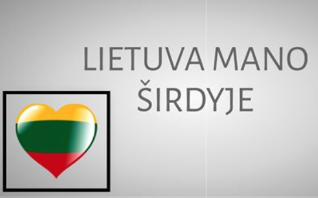
Sveikiname SF GENIO Mokinius dalyvavusius kūrybinių darbų-palinkėjimų konkurse – "Lietuva mano širdyje", skirtame tarptautinei gimtosios kalbos dienai paminėti.Straipsnis apie tai.
Konkurse dalyvavo per 170 mokinių iš 19 užsienio lietuvių formaliojo ir neformaliojo ugdymo mokyklų ir mūsų mokinių darbai yra įdėti šiojevirtualioje parodoje! Kviečiameapsilankyti!
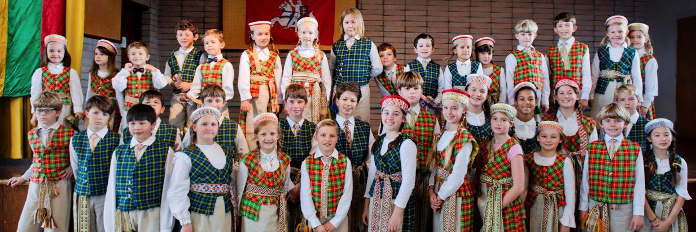
Staipsnis apie lituanistinių mokyklų vasario 16-os dainų projektą. Išsamus ir smagus straipsnis kartu tu SF Genio nuotrauka :)
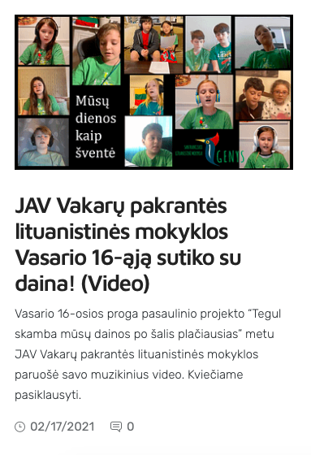
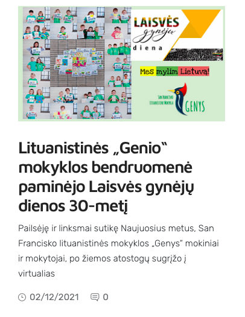
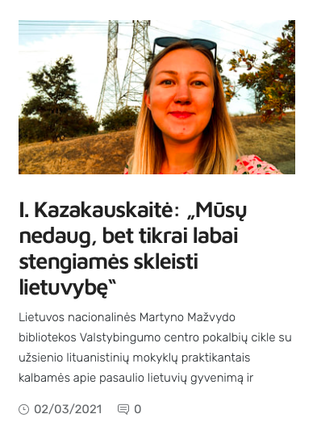
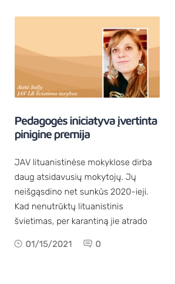
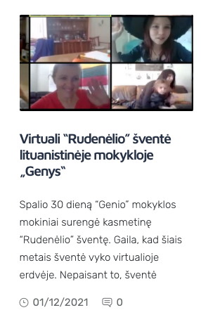
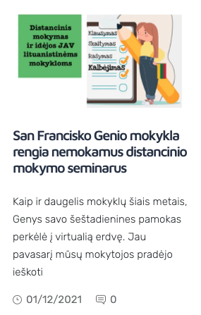
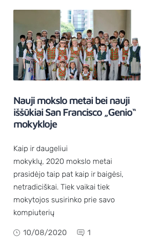
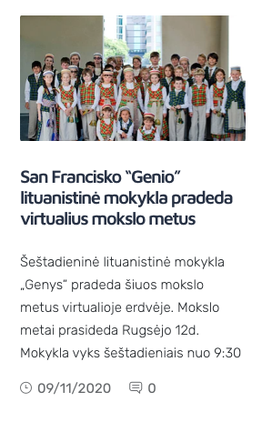
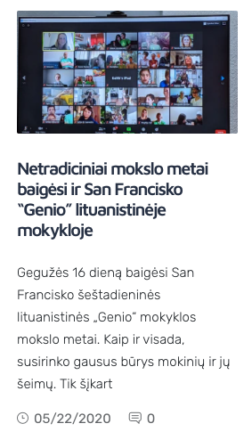
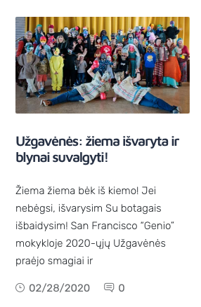
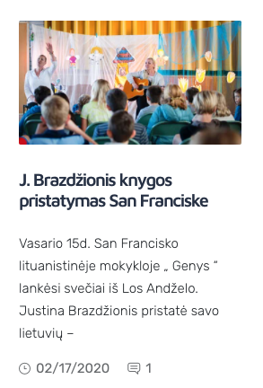
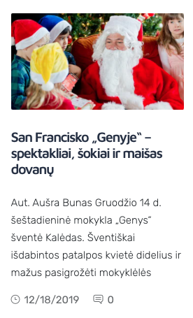
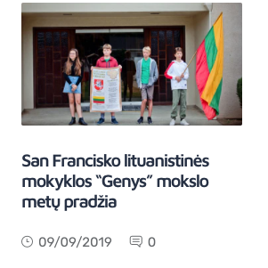
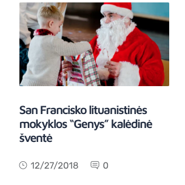
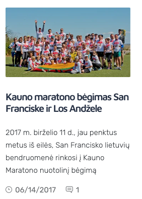
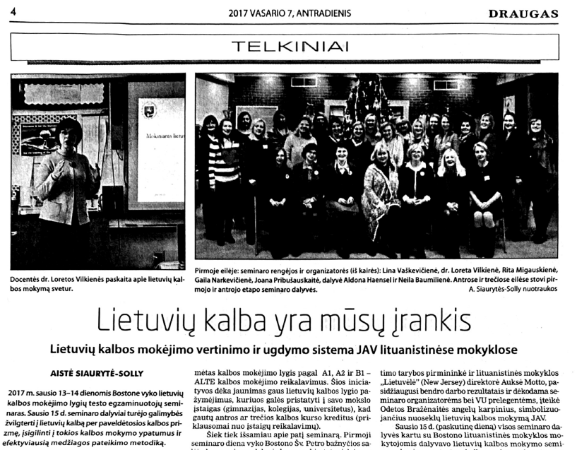